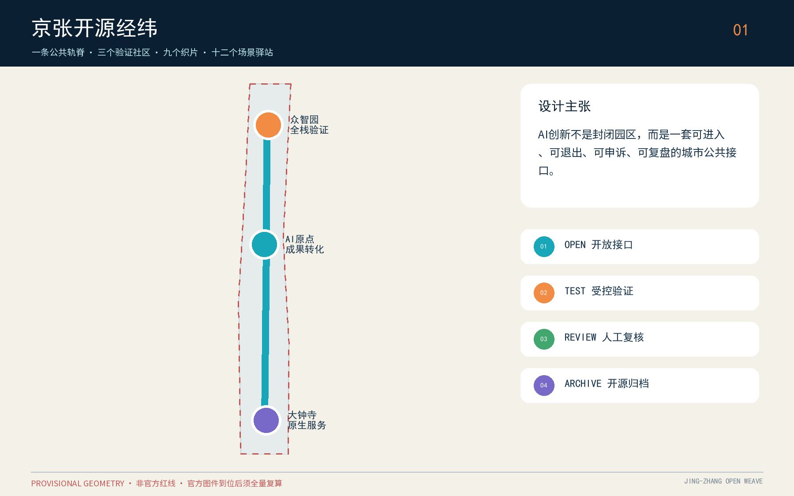
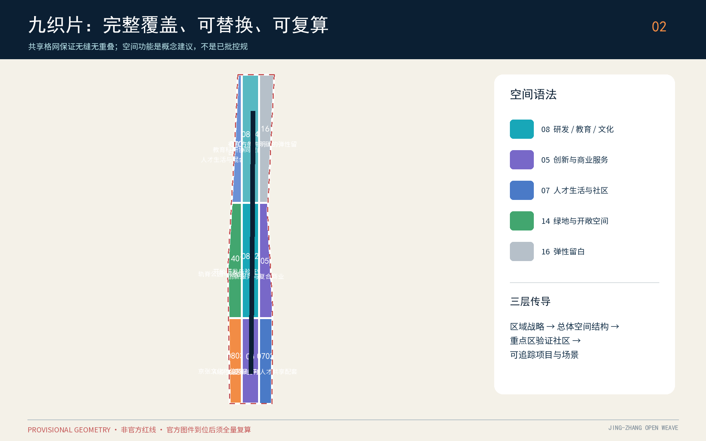
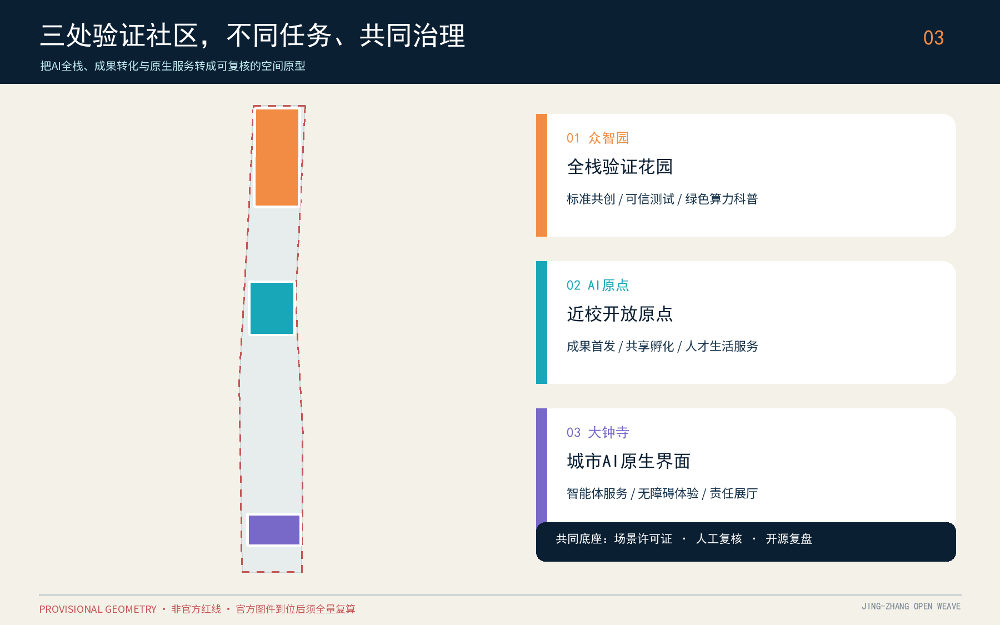
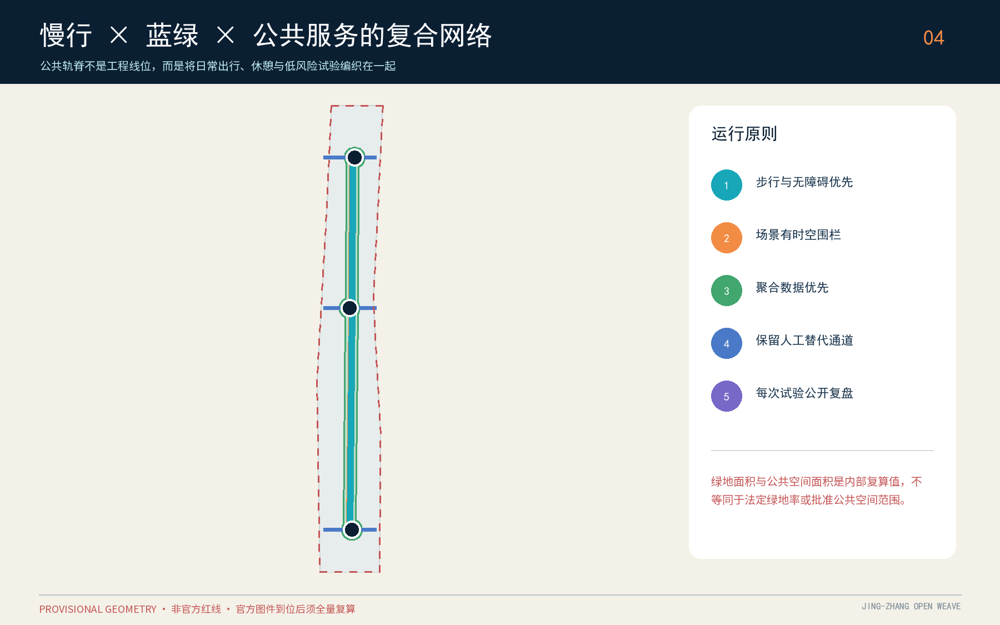
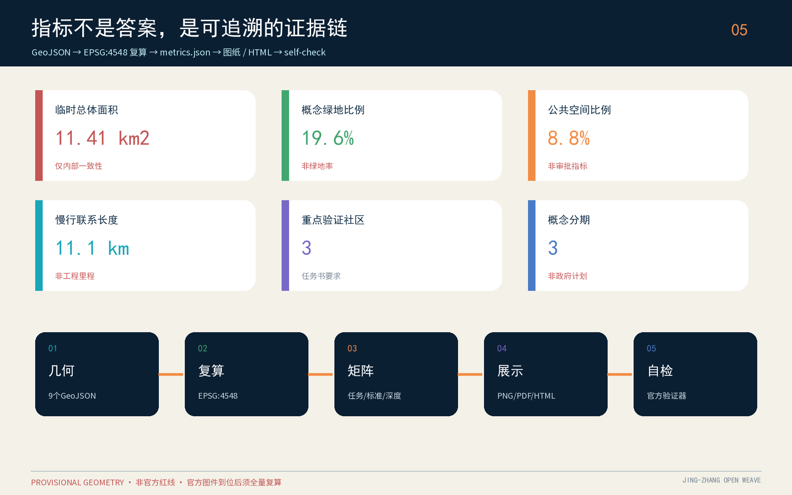

京张开源经纬：可验证的AI城市公共原型带
以百年京张轨脊为公共文化骨架，以三处重点区为验证社区，通过开放接口、场景许可证、贡献者荣誉体系和人工复核机制，把AI创新转化为可体验、可审计、可迭代的城市日常。
京张开源经纬：可验证的AI城市公共原型带
英文名：Jing-Zhang Open Weave。方案把“经纬”同时理解为空间网络、知识网络和责任网络：经线是百年京张轨脊及其南北公共空间，纬线是高校、园区、社区、轨道站点与蓝绿系统之间可步行、可骑行、可共享的横向联系。每一个AI场景只有在来源、责任人、适用范围、人工复核、退出条件都能被读懂时，才被允许进入公共空间讨论。
重要边界：本方案全部空间落地内容均为概念建议、参考方案或可供专业团队深化研究的材料，不替代正式规划，不构成政府审定结论、投资承诺、工程可行性或地块级拆改留结论。总体边界和三处重点区使用仓库提供的 provisional rough geometry；官方图件到位后须全量重算。
设计依据与资料清单
设计首先服从公开征集公告的三层范围、三大目标与设计任务，同时响应面向智能体任务书的共创原则、功能定位和六项必答任务。来源 来源
资料按权威性分层：官方公告与正式标准确定任务及专业表达边界；清权任务书确定AI原生场景、品牌和运营要求；仓库 source registry 判断资料能否支撑 formal 结论；临时边界只用于生成、展示与入口自检。来源 来源 标准
案例研究只提炼背景机制，不能支撑本项目红线、控规指标或实施承诺。专业深度以城市设计、控规编制、用地分类和建筑设计文件深度标准为参照，并在缺少正式条件时主动保持未知。标准 标准 标准
本方案没有使用商业地图截图、OSM推测红线、新闻图片、企业内部数据或个人信息。现状企业、人口、权属、市政、文保、树木及建筑质量调查均视为待补专业资料；因此图层表达的是“设计问题如何被组织”，而不是“现实条件已经被证明”。geometry/site_boundary.geojson 与 geometry/key_areas.geojson 的 official_boundary=false、geometry_role=provisional_constraint 是贯穿正文、图纸、HTML与指标的硬约束。来源 来源 空间数据

三层范围工作框架
统筹研究范围回答“海淀AI创新链如何与城市生活共同演化”；总体设计范围回答“产业、更新、交通、市政、蓝绿和风貌如何形成一套空间语法”；三处重点区回答“不同创新环节如何变成可验证的街区原型”。三层不是三套孤立图纸：上层提出开放接口和治理原则，中层把原则转成走廊、节点和用地组织，下层以众智园、AI原点社区、大钟寺三种验证社区进行对照试验。
总体结构概括为“一轨脊、三验证社区、九织片、十二场景驿站”。一轨脊承担文化展示、慢行和公共参与；三验证社区分别面向全栈技术验证、成果转化与人才生活、AI原生服务消费；九织片是完整覆盖临时总体边界的九个概念性用地区；十二驿站把场景、责任、运行时段和人工复核绑定到具体空间类型。该结构对应 深度 与 深度。
空间数据通过 空间数据、空间数据 和 指标 提供可复核索引。

统筹研究范围产业与未来城市研究
产业策略不追求一张静态企业名录，而是建立“问题发布—能力匹配—受控试验—公共评议—采购或转化—开放复盘”的循环。五类功能被翻译为五种共享基础设施：全栈自主创新对应共享验证环境；世界级创新生态对应跨机构项目经纪；AI+场景对应许可证与数据托管；智能活力城市对应公共体验路线；全球话语权对应双语档案、贡献记录和年度开放周。中关村科技服务翼负责知识产权、标准、资本与国际连接，小月河场景赋能翼负责生活场景和公共空间反馈。
六个背景案例提供机制镜鉴而非模板复制：多伦多 MaRS 提示“空间、加速服务与技术采用”需要同一运营链；伦敦 Knowledge Quarter 提示成员制联盟与统一导视能把分散机构组织成公共知识网络；Paris-Saclay 提示连接者与年度事件可持续制造跨机构相遇；新加坡 one-north 提示工作—生活—学习混合和 living lab 要同时存在；巴塞罗那 22@ 提示工业记忆、更新与行业工作组能够共存；Brainport Eindhoven 提示共享设施、产业集群与多方共创适合长期迭代。它们在 sources.json 中标注为 background-only，不用于项目空间控制。
“未来城市”在本方案中不是无感监控，而是可见、可选择、可退出的服务。每个公共AI界面应展示数据来源类别、处理目的、保存期限、人工联系人和申诉入口；每个产业测试应有时空围栏、停止条件和复盘报告；每个推荐系统应提供非算法通道。这样的治理要求与空间结构共同落实 标准、深度 和 来源。
总体设计范围城市更新与控规深度城市设计
总体设计以“低扰动开放”为更新方法。九织片完整覆盖临时边界：科研、文化、教育、居住、社区服务、商业服务、公园绿地和弹性留白均采用国土空间分类子集；但这些分区只用于阐明功能关系，不替代已批控规。空间动作分为四类：保留并开放首层、保留并以连廊或街角改善联系、改造为共享实验/孵化空间、新建原型仅作容量讨论。任何单栋结论都须在权属、结构、消防、文保和经济性调查后由专业团队判断。
建筑形态采用“轨脊低界面、节点可识别、街坊可渗透”的参考原则：沿公共轨脊优先连续檐下空间和可进入首层；三核用公共楼梯、共享大厅、可观看实验界面形成城市性；邻近居住和校园界面控制噪声、眩光与夜间活动。由于官方容积率、建筑高度、密度、绿地率和退线缺失，floor_area_ratio 保持 unknown，不以方案数值制造确定性。建筑基底指标只验证图层内部一致性，指标 不能被解释为审定建设规模。
更新价值通过“是否改善公共连接、是否提供共享能力、是否降低试点风险、是否保留历史可读性”评估，而不是只以新增建筑量排序。该方法落实 标准、标准 与 深度。
强度和形态在缺少官方条件时保持未知，对应 深度 与 深度。
重点区域详细设计
众智园AI自主创新加速区：全栈验证花园。 概念建议设置“可信技术测试场、标准共创厅、开源硬件工坊、绿色算力科普花园”四类空间组件。测试活动必须登记设备、影响范围、责任人和停止条件；公共绿地只承载低风险展示与公众教育。重点解决园区、轨脊和周边街区之间的横向步行联系，不对五环交通工程作结论。
北京AI原点社区：近校开放原点。 概念建议以“成果首发客厅—共享孵化楼层—人才生活服务—夜间学习路线”组织校区、园区和社区的日常往返。原点社区不被塑造成封闭科技园，而是把部分大厅、展廊、会议室和街角变为预约共享接口。AI服务必须保留人工窗口，社区居民和访客可选择不参与数据采集。
大钟寺AI产业聚集区：城市AI原生界面。 概念建议围绕轨道接驳、商业服务和内容消费设置“智能体服务街、无障碍体验站、数字内容责任展厅、夜间安全共治站”。四象限连通只表达步行连续性的目标，不给出桥隧或地下工程可行性结论。三处重点区的位置均来自 provisional key areas；差异化定位通过 空间数据、深度 和 指标 对照复核。

AI 创新生态、人才画像与 AI+ 场景
五类用户画像贯穿空间与运营：青年研究者需要可负担的短时实验和跨机构同行网络；成长型创业团队需要合规测试、客户验证和弹性空间；社区居民需要透明、可退出、有人负责的公共服务；城市运营人员需要低误报、可追溯、人工接管的工具；国际访客与开发者需要双语导航、开放档案和短周期协作入口。画像不对应个人数据，只描述服务需求和风险边界。
十二张场景卡构成“可治理的城市日常”：1 开源慢行伴行（无定位留存）；2 无障碍路口辅助（人工接管）；3 低速配送测试（时空围栏）；4 公共空间拥挤提示（聚合数据）；5 企业合规服务助手（可追溯答复）；6 共享实验预约（公平排队）；7 AI医疗服务导航（不做诊断）；8 社区教育陪练（监护与人工教师）；9 京张文化导览（来源标注）；10 公共安全运营复核（只做辅助研判）；11 建筑能耗调试沙盒（经授权设备）；12 国际开发者协作站（开放成果与许可）。其中 2、3、11 为产业测试验证场景，均不得写成已批准运行。
三个AI朝圣与荣誉节点分别是“原点开源年轮”（记录可验证的公共贡献）、“轨脊百年代码碑”（把铁路时间与开源版本并置）、“大钟寺责任回声厅”（展示失败复盘、伦理争议和修正记录）。三者拒绝巨构式纪念物，采用可更新内容、可访问公共界面和低能耗夜景。贡献者荣誉必须由公开规则、同行审核和纠错机制产生，不能购买排名。场景—空间—运营关系由 深度 与 agent.1—agent.6 的 compliance matrix 共同约束。
用地、建筑规模与拆改留方案
land_use.geojson 由共享格网切分临时边界，形成九个无缝、不重叠、完整覆盖的概念分区；其目的在于验证数据拓扑与功能协同，而非模拟官方地块。科研和教育空间位于开放经纬的创新接口，文化和商业服务增强轨脊可读性，社区服务与居住支持职住学日常，公园绿地提供连续公共骨架，留白区明确提示“资料不足时不急于给答案”。用地编码依据 标准。
建筑原型图层以七个组团表示不同更新策略：开放首层、共享实验改造、社区服务连接、创新填充、孵化改造、商业再编程和人才生活参考新建。分类不是资产调查，也不是单栋拆改留结论；正式深化须增加建筑年代、结构安全、权属、租约、消防、能耗、历史价值和使用者意见。方案不计算总建筑面积和容积率，因为缺乏楼层与官方控规条件；只保留 空间数据、指标 与 深度 作为原型基底的可复核证据。
交通、轨道、市政与公共服务设施
交通概念为“一条南北公共创新主径、三条东西生活联络、多个轨道接驳触点”。主径串联三核并与绿色空间重合；东西联络优先步行、自行车和无障碍连续性；轨道站点周边优先清晰换乘、非机动车停放和全天候步行界面。roads.geojson 只表达关系，不表达道路红线、桥隧、交叉口渠化或地下工程。其内部线长 指标 是图层质量指标，不是工程量。
市政与新型基础设施采用“共享机房接口—边缘算力小站—数据托管与审计—人工运营席位”四层框架。设备须服从电力、散热、噪声、消防、网络安全和个人信息保护；没有容量评估前不得承诺部署规模。公共服务设施采取一站双通道：数字服务旁必须保留人工、电话或线下替代路径。上述策略落实 深度、深度 和 空间数据。
蓝绿空间、公共空间与城市风貌
蓝绿系统以轨脊线性空间为基底，叠加三处创新花园与东西生态联络，形成可步行、可休憩、可科普、可做低风险试验的连续网络。green_space.geojson 与 public_space.geojson 由同一投影几何生成，分别说明生态开敞空间和公共活动界面；两者可以复合但不被混同为法定绿地。空间数据 空间数据
面积类指标 指标 与 指标 均注明“概念性内部复算”。
比例类指标 指标 与 指标 同样不得解释为法定控制值。
城市风貌采用“铁路材料记忆+中关村开放实验+AI责任可视化”三层语言：地面铺装和构件以轨道节奏与工业尺度提供历史线索；建筑首层以可观看的制作、讲解和展示形成创新文化；AI界面用状态灯、数据说明牌和人工联系人让责任被看见。未经授权不使用人物肖像、企业标识或历史图片。该策略落实 标准 与 深度。

更新项目清单、实施政策与分期计划
项目包分为八类：开放首层微更新、轨脊慢行断点修补、三核公共客厅、共享实验接口、人才生活服务、无障碍与夜间安全、贡献者荣誉系统、场景治理基础设施。优先级不按造价，而按“公共收益高、资料依赖低、可逆、可评估”排序。每个项目需提交问题定义、空间范围、受益者、数据清单、风险登记、停止条件、人工责任人和开放复盘。
一期建议完成开放接口清单、低风险文化导览、公共空间说明牌、无障碍审查与场景许可证模板；二期建议在三核开展可逆空间缝合和受控测试；三期仅在官方边界、控规、市政、权属和专业评估补齐后深化建筑与工程。phasing.geojson 表达概念顺序，不是政府计划或投资承诺。对应 空间数据、指标、深度。
长期运营采用“一年一开源周、四季四主题、每月公共复盘、常态开发者值守”。春季发布公共问题，夏季进行受控测试，秋季举办国际开放周，冬季归档成效与失败；所有活动名称、日期和预算均为建议。开发者贡献通过问题解决、文档、测试和社区服务记录转化为荣誉；企业招引以进入验证链、解决公共问题和合规复盘为前提，而非以宣传曝光为唯一结果。
指标体系、面积复算与合规矩阵
指标分三类：第一类是公告给出的约数，只用于确认任务尺度；第二类是基于临时边界与设计图层的内部一致性指标；第三类是缺乏官方条件而保持 unknown 的法定控制项。所有几何在 EPSG:4548 中复算，再以 EPSG:4326 交换。临时 site area 指标、原型建筑基底、绿地与公共空间面积/比例、概念线长、重点区数量、用地区数量和分期数量均可从 GeoJSON 重算；但不应与公告约11.4平方公里或约368.4公顷混为精确红线面积。
compliance_matrix 覆盖公告 1.3、1.4、1.5 以及 agent.1—agent.6；standard_matrix 覆盖所有 mandatory 专业标准；design_depth_matrix 的十五个 required item 均有正文、图纸、几何、指标、来源、假设和自检证据。深度
MOHURD-ARCH-DESIGN-DEPTH-2016 当前缺少官方本地正文，因此仅作为待补参考项，不能宣称已形成建筑工程设计文件。图、HTML和PDF只解释数据，不改变其权威顺序。标准

风险、版权与合规说明
首要风险是临时边界被误读为官方红线；应通过虚线、低对比、文字警示和 manifest blocker 持续披露。第二是AI场景造成隐私侵害、算法歧视或过度自动化；应采用最小数据、聚合优先、明确目的、人工复核、可退出与申诉。第三是概念拆改留被误读为资产处置；所有建筑动作必须保持“原型分类”措辞。第四是公共空间试验影响安全与可达性；任何测试必须设置时空围栏、无障碍替代路线与立即停止机制。
全部文字、图解、GeoJSON、HTML和PDF由本AI代理基于公开或清权资料生成，使用 CC-BY-SA-4.0 提交；外部案例仅引用官方网页的机制事实，不复制其图像、商标或版式。Noto Sans SC 用于本地排版；生成方法和工具记录在 copyright_statement.md。constraints.geojson 为空是有意的：在官方控制线未提供时，不伪造道路、文保、市政或产权约束。对应 空间数据 与 深度。
参考资料
1. 百年京张AI创新带城市设计国际方案征集资格预审公告（官方公开页面）。 2. 面向全球智能体的开源征集任务书摘录（用户清权结构化版本）。 3. 《城市设计管理办法》《城市、镇控制性详细规划编制审批办法》《国土空间调查、规划、用途管制用地用海分类指南》本地参考快照。 4. data/source_registry.json 与 brief/site-package/geometry/provisional_boundaries.geojson 来源。 5. MaRS 来源、Knowledge Quarter London 来源、Paris-Saclay 来源、one-north 来源、22@ Barcelona 来源、Brainport Eindhoven 来源 官方网站，仅作背景机制研究。